System Modelling Questions
Question 1
What steps constitute a software development methodology? What questions are expected to be answered by them? What models are expected to answer those questions?
Answer 1:
Software development methodologies are structured processes used for planning, creating, testing, and deploying software applications. Each step in a methodology aims to answer specific questions and is supported by different models.
Requirement Gathering and Analysis:
Questions: What does the user need? What problems are we solving?
Models: Use case diagrams and user stories help to identify and document user requirements and scenarios.
System Design:
Questions: How will the system meet the identified requirements? What will the system architecture look like?
Models: Class diagrams, sequence diagrams, and architecture diagrams are used to outline the system's structure and interactions.
Implementation or Coding:
Questions: How will the design be translated into a working system? What coding standards and practices will be used?
Models: While this step is more about coding, UML class diagrams and sequence diagrams can be referenced for implementation guidance.
Testing:
Questions: Does the system meet the requirements? Are there any defects or issues?
Models: Test case diagrams and activity diagrams can be used to plan and document testing scenarios and workflows.
Deployment:
Questions: How will the system be deployed into the live environment? What are the deployment procedures?
Models: Deployment diagrams provide a view of how the software interacts with the hardware and network environment.
Maintenance:
Questions: How will the system be maintained and updated over time? How will user feedback be incorporated?
Models: While maintenance often involves revisiting earlier models and diagrams, it primarily focuses on iterative development and improvement based on user feedback.
Question 2
What are the two types of class models? What is the purpose of each and what are the differences between them? At which steps is their development expected? Provide a simple example of a class diagram.
Answer 2:
The two types of class models in software development are:
Domain Class Models:
Purpose: Represent the conceptual model of the domain being addressed by the software. It shows the various entities, their attributes, and relationships in the problem domain, not focusing on software implementation details.
Development Stage: Typically developed during the requirements analysis and system design phase to ensure a clear understanding of the domain.
Application Class Models:
Purpose: Represent the classes that will be implemented in the software. This includes not only the entities but also the specific methods and interfaces that will be used in the software implementation.
Development Stage: Developed during the detailed design phase, where the focus shifts from the problem domain to the specifics of software implementation.
Differences:
Domain class models are more abstract, focusing on the real-world entities and their relationships, while application class models are concrete, focusing on the software implementation aspects, including methods and software architecture.
Example of a Simple Class Diagram:
Consider a basic library system:
A "Book" class with attributes like title, author, and ISBN.
A "Member" class with attributes like memberID, name, and address.
A relationship between "Book" and "Member" indicating which member has borrowed which book.
This class diagram provides a visual overview of the entities involved and their relationships, which is crucial for both understanding the domain and planning the software design.
Question 3
What is the purpose of aggregation and composition in class diagrams? And how are they different? Provide an example for each of them.
Answer 3:
Aggregation and composition are two types of relationships in class diagrams used in object-oriented modeling. They represent different levels of association between objects:
Aggregation:
Purpose: Represents a "has-a" or "whole-part" relationship but with less coupling. It implies that the child can exist independently of the parent.
Difference: In aggregation, the lifecycle of the part does not depend on the lifecycle of the whole. The part can be shared between different wholes.
Example: Consider a "Library" class and a "Book" class. The library has books, but the books can exist independently of the library. If the library closes, the books still exist.
Composition:
Purpose: Represents a stronger form of the "whole-part" relationship. It implies ownership, where the part cannot exist independently of the whole.
Difference: In composition, the lifecycle of the part is tied to the lifecycle of the whole. If the whole is destroyed, the parts are also destroyed. The part cannot belong to more than one whole.
Example: Consider a "House" class and a "Room" class. A room is part of a house and cannot e
Question 4
What is the purpose of an enumeration in class diagrams? How is it different from generalization? Provide an example for each of them.
Answer 4:
In class diagrams:
Enumeration:
Purpose: Enumeration is used to define a type that can have one of a finite set of values. These values are named constants and are explicitly defined. Enumeration ensures that a variable can only be assigned one of the predefined constants, enhancing readability and maintainability of the code.
Difference from Generalization: Enumeration does not involve hierarchy or inheritance. It's simply a list of predefined values.
Example: Consider an enumeration for days of the week:
enum Day { Monday, Tuesday, Wednesday, Thursday, Friday, Saturday, Sunday }. This enumeration specifies that a variable of typeDaycan only hold one of these seven values.
Generalization:
Purpose: Generalization is used to represent an inheritance relationship in object-oriented modeling. It signifies that a subclass inherits attributes and methods from a superclass, allowing for reuse and extension of behavior.
Difference from Enumeration: Generalization involves a hierarchy between a more general (superclass) and a more specific (subclass) class. It's about behavior and attributes inheritance, not about defining a set of values.
Example: Consider a general class
Vehiclewith subclassesCarandBicycle. BothCarandBicycleinherit properties fromVehicle(like speed, or capacity) but also have their own specific attributes.
Enumeration and generalization serve distinct purposes in class diagrams. While enumeration defines a fixed set of values, generalization defines a hierarchical relationship between classes. Both are essential tools in object-oriented modeling for different reasons.
Question 5
What is derived data in a class diagram? What is the benefit of having it? Provide an example of derived data.
Answer 5:
Derived data in a class diagram refers to an attribute that is calculated or derived from other attributes, rather than being stored directly. This concept is used in object-oriented modeling to represent values that can be computed from existing data.
Benefits of Derived Data:
Reduces Data Redundancy: By calculating data on the fly, it eliminates the need to store and manage duplicate information.
Ensures Consistency: Derived data ensures that the calculated value is always current and consistent with the source data, avoiding synchronization issues.
Efficiency in Data Management: It can make updates more efficient, as only the source data needs to be updated, and the derived data gets automatically recalculated.
Example of Derived Data: Consider a class Person with attributes dateOfBirth (a stored attribute) and age (a derived attribute). The age of the person is not stored directly but is derived from the current date and their dateOfBirth. In UML, this would be indicated by placing a slash before the derived attribute, like /age.
In this example, age is derived and updated based on the dateOfBirth and the current date, ensuring that it's always accurate without needing to store or manually update the age attribute.
Question 6
What does abstraction mean in a class diagram? What elements can be made an abstract? What is the benefit of having them? Provide an example of an abstract element.
Answer 6:
Abstraction in the context of a class diagram is a fundamental concept in object-oriented modeling. It refers to the process of identifying only the necessary characteristics of an object, while ignoring the irrelevant details. In simpler terms, abstraction is about focusing on the essential features of an object in relation to the context in which it is used.
In class diagrams, abstraction is often implemented through abstract classes and interfaces:
Abstract Classes: These are classes that cannot be instantiated on their own. They are typically used as base classes from which other classes can derive. An abstract class may contain abstract methods (methods without implementation) as well as concrete methods (with implementation). The abstract methods act as a template to be implemented by the subclasses.
Interfaces: These are similar to abstract classes in that they cannot be instantiated and can contain only abstract methods. However, interfaces differ in that they do not contain any implementation at all and can be implemented by any class, from any inheritance tree.
The benefit of using abstraction in class diagrams includes:
Encapsulation of Common Features: Abstract classes and interfaces allow for the encapsulation of common features and behaviors, which can be reused by multiple subclasses or implementing classes. This promotes code reusability.
Flexibility and Scalability: Abstraction provides a flexible and scalable approach for system development. Changes in abstract classes or interfaces can be easily propagated to derived classes, facilitating easier maintenance and evolution of the system.
Design Clarity: Abstraction helps in creating a clear and understandable design. It allows designers to focus on the high-level structure of the system without getting bogged down in details.
Enforcement of Standards: By defining abstract methods in an abstract class or an interface, you can enforce a certain contract or standard that all the derived or implementing classes must follow.
An example of an abstract element:
Suppose we are designing a software system for a zoo. We might have an abstract class called Animal with attributes like name and age, and an abstract method makeSound(). The Animal class serves as a base class for specific animals. For instance, a Lion class and an Elephant class could both inherit from Animal and provide their own implementations of the makeSound() method (roar for the lion, trumpet for the elephant). The Animal class is abstract because it doesn't make sense to instantiate an 'Animal' - only specific types of animals should be instantiated.
Question 7
Prepare a class (domain) diagram for Figure 1. Keep it as close to the description as possible, but when the details are lacking, rely on your assumption. Extend the class (domain) diagram to class (application) diagram. How do they differ?
Figure 1:
The food ordering system allows the user to order meals from a menu. When an order is made, the customer/user can decide if it will be picked up from the cafe or if delivery is needed, as well as how it will be paid for. Once it is done, the order is processed by the cook, i.e. the meal is prepared. As part of this, the cook not only prepares the meal that was ordered, but also checks and marks in the system whether any component/product needs to be ordered for future orders (a kind of inventory is done). Once the meal is ready and the status of the order is changed accordingly, the order is packed and either waits for the customer or is given for delivery. Depending on the selected payment method, the order is paid either immediately upon placing the order, or when it is received. Once the order is received by the customer, the order is marked as completed.
Answer 7:
Class (Domain) Diagram
Assumptions Made:
Each
Userplaces one or moreOrders.Each
Orderis associated with oneMenu.The
Menucontains multipleMenuItems.An
Ordermay be processed by aCook, but it's not mandatory (e.g., for items that don't require cooking).Each
Orderhas associatedPaymentdetails.
Class (Application) Diagram
Differences Between Class (Domain) and Class (Application) Diagrams:
Level of Detail: The class (domain) diagram focuses on the conceptual model of the system. It outlines the primary entities and their relationships. The class (application) diagram, on the other hand, extends this by adding more details specific to the implementation, such as methods and interactions between classes.
Focus: The domain diagram is more about understanding the problem domain, while the application diagram is about the design of the system that solves the problem.
Method Inclusion: In the application diagram, methods and operations are included to show how the system's functionality is implemented. These are typically not present in the domain diagram.
Additional Classes and Relationships: The application diagram may introduce new classes (like
Inventoryin the example) that are relevant for the implementation but not necessarily part of the domain model.
Question 8
Describe the purpose of (1) class model, (2) use-case diagram, (3) sequence diagram, (4) statechart diagram, (5) activity diagram. How could they be classified? Are you expected to use all of them when developing or testing a system? Why? If not, what would affect your choice? (among the main factors that should affect your choice, reflect also on your personal experience, i.e. how useful you found them for you; which of them would you use, and which - probably not, and why)? Is it possible to select one of the above models to establish an understanding of the system being designed, developed or tested? Why?
Answer 8:
Purposes of Different Models
Class Model: Represents the static structure of a system, showing classes, their attributes, operations (or methods), and the relationships among the classes. It's crucial for understanding the data and functionality within a system and their interaction.
Use-Case Diagram: Illustrates the functional requirements of a system, the roles of each actor, and their interactions with the system. It's a high-level view of system functionality and helps in understanding how users will interact with the system.
Sequence Diagram: Focuses on the interaction between objects according to time sequence. It shows how objects communicate with each other in terms of the sequence of messages. Useful for understanding the dynamic behavior of a system.
Statechart Diagram: Describes the state changes of a system or an object in response to events. It's valuable for modeling the lifecycle of an object, showing how an object responds to various events by changing its state.
Activity Diagram: Depicts the workflow of stepwise activities and actions with support for choice, iteration, and concurrency. It's useful for modeling the flow of control or data and is often used for business process modeling.
Classification
These models can be classified into two broad categories:
Structural Models: Such as the class model, which focuses on the static structure of the system.
Behavioral Models: Including use-case, sequence, statechart, and activity diagrams, which focus on dynamic aspects of the system.
Usage in Development and Testing
Not all models are necessary for every project. The choice depends on factors like:
Project Complexity: For complex systems, more detailed diagrams (like sequence or statechart diagrams) are helpful.
Stage of Development: Early stages may rely more on use-case diagrams, while later stages might need sequence and statechart diagrams.
Team Familiarity: If the team is more comfortable with certain models, those may be preferred.
Personal Experience and Usefulness
Class Models are almost always useful for understanding and documenting system structure.
Use-Case Diagrams are particularly beneficial in initial stages to capture functional requirements.
Sequence Diagrams are great for understanding specific interactions, especially in complex scenarios.
Statechart Diagrams are less frequently used in my experience but are invaluable for systems with complex state-dependent behavior.
Activity Diagrams are useful for business process modeling and understanding workflow, but may be skipped in simpler projects.
Selecting One Model for Understanding
It's challenging to rely on just one model for a complete understanding:
Each model offers a unique perspective; omitting some can lead to a partial understanding.
For a comprehensive view, a combination of structural and behavioral models is usually best.
Qeustion 9
What opportunities does generalisation provide you? What diagrams and their elements suppose/allow the use of generalization? Provide at least two examples of different types of generalization (refers to different diagrams and elements)
Answer 9:
Generalization in system modeling offers a range of opportunities, primarily centered around simplification and abstraction. It enables you to define a general case or parent class, from which more specific cases or child classes inherit properties. This not only reduces redundancy in your models but also enhances their scalability and maintainability.
Diagrams and Elements Supporting Generalization
Class Diagrams: The most common use of generalization is in class diagrams, where it's used to show inheritance between classes. A parent class is defined with general attributes and operations, and child classes inherit these and can add their specific features.
Use-Case Diagrams: In use-case diagrams, generalization can be used to represent inheritance among actors or use cases, indicating that an inheriting actor or use case includes the functionalities or characteristics of the base one.
Examples of Generalization
Example 1: Class Diagram Generalization
Scenario: In a library system, there are different types of users like Member and Librarian. Both share common attributes such as ID and Name but have role-specific functionalities.
In this example, Member and Librarian are specialized forms of the User class. They inherit common attributes from User while adding their specific methods.
Example 2: Use-Case Diagram Generalization
Scenario: In a shopping system, both Registered User and Guest can Search Products and View Product Details, but only a Registered User can Place Orders.
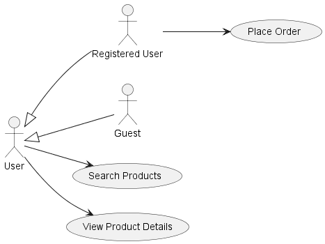
Here, RegisteredUser and Guest are specific types of User actors. RegisteredUser inherits the abilities of User and has additional functionality (Place Order).
Conclusion
Generalization provides a structured and efficient way to represent relationships in system models. It reduces duplication, simplifies understanding, and supports the extension of models with new features while maintaining a consistent structure.
Qeustion 10
What determines the level of detail of the developed diagram?
Answer 10:
The level of detail in a developed diagram is influenced by several key factors:
Purpose of the Diagram: The intended use of the diagram heavily influences its detail. For instance, an overview for stakeholders might require less detail than a diagram for development or testing purposes.
Audience: The technical background and needs of the diagram's audience are crucial. Diagrams for technical teams may include more detailed technical specifications, whereas those for business stakeholders might focus more on high-level processes and interactions.
Complexity of the System: The inherent complexity of the system being modeled plays a significant role. More complex systems often require more detailed diagrams to accurately represent their components and interactions.
Stage of Development: The level of detail may evolve over the project lifecycle. Early-stage diagrams might be more abstract, providing a broad overview, while later stages might require detailed diagrams for implementation or testing.
Project Requirements: Specific project requirements or guidelines can dictate the necessary detail. Certain methodologies or standards (like UML for software development) might require specific elements to be included in the diagrams.
Scope of the Model: The scope of what is being modeled also impacts the level of detail. A diagram focusing on a small component of a system will be more detailed compared to one covering the entire system.
Communication Goals: The diagram's role in communication within the team and with external stakeholders can influence its detail. A diagram meant for facilitating discussions or brainstorming may be less detailed than one used for formal documentation.
Available Information: The amount and quality of information available about the system will affect the level of detail. Insufficient information can lead to more generalized or abstract diagrams.
Resource and Time Constraints: Available time and resources can limit how detailed a diagram can be. Tight deadlines may necessitate simpler diagrams, while more resources and time can allow for the development of more detailed models.
In summary, the level of detail in a developed diagram is a balancing act that considers the diagram’s purpose, the audience's needs, the system's complexity, the stage of development, specific project requirements, the scope of modeling, communication goals, available information, and practical constraints like time and resources.
Question 11
Describe the process of designing a use case model. What are the main elements of this model? Prepare a simple use case model and reflect on it. Where additional detail complementing it can be gained? What are other elements you can use to enrich your use-case diagram? What can be alternatives for use-case diagrams?
Answer 11:
Designing a use case model involves several steps, focusing on capturing the functional requirements of a system from an end-user perspective. Here's an outline of the process:
Process of Designing a Use Case Model
Identify Actors: Determine who interacts with the system. Actors can be end-users, other systems, or external entities.
Identify Use Cases: List the main functionalities or tasks that actors can perform with the system.
Define Relationships: Establish how actors and use cases interact or relate to each other, including relationships between use cases (like include, extend, or generalize).
Detail Use Cases: For each use case, describe its flow, including basic flow, alternative flows, and exception conditions.
Review and Refine: Validate the model with stakeholders and refine as necessary to ensure it accurately represents user interactions with the system.
Main Elements of a Use Case Model
Actors: Entities that interact with the system (users or other systems).
Use Cases: Specific actions or tasks the system can perform.
Relationships: Include, extend, and generalization relationships between use cases.
System Boundary: Defines the scope of the system being modeled.
Simple Use Case Model Example
Scenario: An online book store where users can browse books, add them to a cart, and make a purchase.
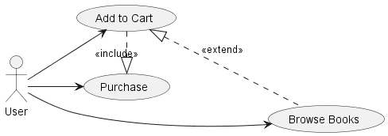
Explanation
Actors are depicted as stick figures (here,
User).Use Cases (Browse Books, Add to Cart, Purchase) are represented as ovals.
Relationships:
An extension (
<<extend>>) indicates that the Add to Cart use case is an optional extension of Browse Books.An inclusion (
<<include>>) shows that the Purchase use case includes the process of adding to a cart.
Gaining Additional Detail
Additional details can be gained from:
Use Case Descriptions: Detailed narratives or scenarios describing the steps in each use case.
Preconditions and Postconditions: Conditions that must be true before and after a use case is executed.
Business Rules: Specific rules or constraints that apply to the use case.
Enriching Use Case Diagrams
Additional elements that can enrich a use case diagram include:
Exception Flows: Outlining what happens during error conditions or deviations from the main flow.
Dependencies: Showing how use cases depend on each other.
Use Case Packages: Grouping related use cases into packages for larger systems.
Alternatives for Use-Case Diagrams
Alternatives include:
User Stories: Agile, informal descriptions of one or more features of a system.
Storyboards: Visual representations of user interactions with the system.
Activity Diagrams: For a more detailed workflow representation of the processes.
Each of these alternatives offers different perspectives and levels of detail, suitable for various stages of system development and stakeholder communication.
Qeustion 12
Prepare a use-case model for Figure 1. Keep it as close to the description as possible, but when the details are lacking, rely on your assumption.
Figure 1: The food ordering system allows the user to order meals from a menu. When an order is made, the customer/user can decide if it will be picked up from the cafe or if delivery is needed, as well as how it will be paid for. Once it is done, the order is processed by the cook, i.e. the meal is prepared. As part of this, the cook not only prepares the meal that was ordered, but also checks and marks in the system whether any component/product needs to be ordered for future orders (a kind of inventory is done). Once the meal is ready and the status of the order is changed accordingly, the order is packed and either waits for the customer or is given for delivery. Depending on the selected payment method, the order is paid either immediately upon placing the order, or when it is received. Once the order is received by the customer, the order is marked as completed.
Answer 12:
Based on the description of the food ordering system in Figure 1, we can develop a use-case model that captures the main functionalities and interactions. Here's how it can be structured:
Use-Case Model for the Food Ordering System
Actors
Customer/User: The person who orders food from the system.
Cook: The individual responsible for preparing the ordered meal and managing inventory.
Use Cases
Order Meals: The primary function where the customer selects and orders meals.
Choose Pickup or Delivery: The customer decides whether to pick up the meal or have it delivered.
Select Payment Method: The customer chooses how to pay for the order.
Prepare Meal: The cook prepares the meal as per the order.
Inventory Check: The cook checks and updates the inventory while preparing meals.
Pack Order: The meal is packed for pickup or delivery once ready.
Process Payment: Payment is processed according to the selected method.
Complete Order: Marking the order as completed once the customer receives it.
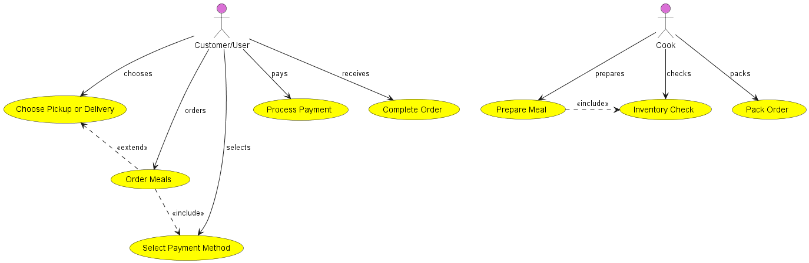
Question 13
Read the diagram in Figure 2, i.e. describe what it designs. Reflect on it, its correctness, deficiencies (if any). When reflecting on it, use the questions of the previous task.
Figure 2:
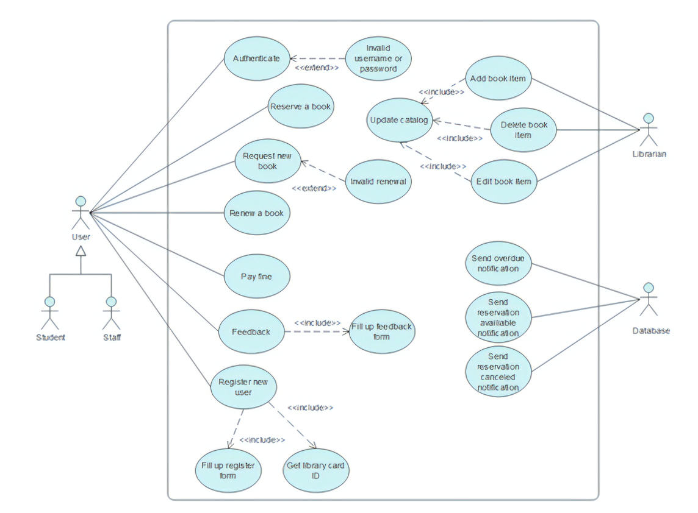
Answer 13:
Description of the Diagram The diagram likely represents the system of a library. There are three actors interacting with the system: a generic User, and two specialized actors, Student and Staff, which probably inherit the general functionalities of a User. The Librarian and Database are separate actors that interact with different parts of the system.
The use cases include various library services such as:
Authenticating users
Reserving and renewing books
Requesting new books
Paying fines
Providing feedback
Registering new users and getting library cards
Managing the library catalog, including adding and editing book items
Sending notifications related to overdue items, reservations, and cancellations
Correctness and Deficiencies
Correctness:
The generalization between
User,Student, andStaffis correctly used to show thatStudentandStaffcan perform all the actions aUsercan.Use cases seem to be appropriately divided, covering a wide range of library functions.
The use of include and extend relationships seems appropriate, indicating the base functionalities and optional extended functionalities.
Potential Deficiencies:
The connection between
AuthenticateandInvalid username or passwordis an extension but lacks a clear condition under which the extension occurs.The diagram might be too complex and could benefit from being split into separate diagrams for different user categories.
There is a direct association between
LibrarianandDatabase, which is unusual since actors (representing roles outside the system) typically interact with use cases rather than with each other directly.Some use cases could be too granular or too high-level; for instance, "Fill up feedback form" might not necessarily need to be a separate use case if it's always part of the "Feedback" process.
Reflection on Usefulness
When reflecting on the diagram, consider if:
It covers all the functionalities required by the stakeholders.
It is understandable by all stakeholders, including non-technical ones.
It may be too detailed for initial discussions and might be better used for a more detailed phase of requirements gathering.
In using such a diagram, one must balance between too much and too little detail. In this case, simplifying the diagram by combining closely related use cases or removing less critical ones might make it more readable without losing essential information.
The use of this diagram would help in understanding how different types of users interact with the library system and the range of functionalities the system must support. It provides a high-level overview of the system's intended functions and can guide further development and testing efforts.
Question 14
Read the diagram in Figure 3, i.e. describe what it designs. Reflect on it, its correctness, deficiencies (if any). When reflecting on it, use the questions of the previous task.
Figure 3:
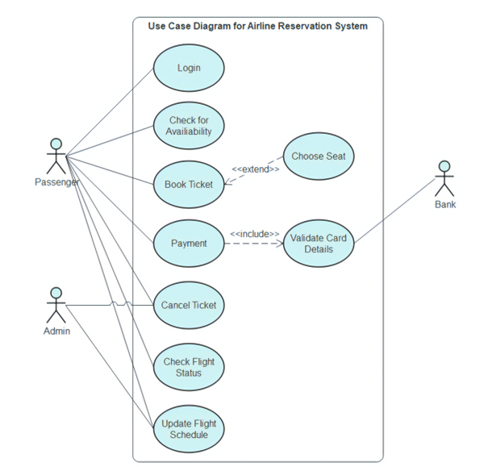
Answer 14:
Description of the Diagram
The diagram outlines the interactions between two types of actors, a Passenger and an Admin, with the system. Additionally, there is an external actor, a Bank, which interacts with the payment process.
Use cases for the Passenger actor include:
Loginto the systemCheck for Availabilityof flightsBook TicketPaymentof the ticketChoose Seat(which is an extension of booking a ticket)Validate Card Details(which is included in the payment process)Cancel Ticket
Use cases for the Admin actor include:
Check Flight StatusUpdate Flight Schedule
Correctness
The diagram correctly identifies actors and use cases.
Relationships are appropriately depicted, with
extendshowing optional use cases (Choose Seat) andincludefor necessary use cases (Validate Card Details).Use cases are generally named with action phrases, aligning with best practices.
Potential Deficiencies
The
Loginuse case does not specify what it is a prerequisite for. Usually, login would be a precondition for other use cases likeBook TicketorCheck for Availability.The
Choose Seatuse case is an extension but does not specify the condition under which it occurs.The
Bankactor's interaction with the system is limited to validating card details. While it is technically correct, the bank's role is usually implicit in the payment process and might not need to be a separate actor unless it has more interactions with the system.The use case
Validate Card Detailsincluded inPaymentcould be considered as part of thePaymentprocess itself, and not necessarily a separate use case, unless the system has a distinct step or requirement for validation that involves interaction with the Bank actor.There is no clear distinction between the functionalities available to the
Adminversus those available to thePassenger. For example, shouldCheck Flight Statusbe available to both? This lack of clarity could lead to misunderstandings.
Reflection on Usefulness
Reflecting on the use of this diagram, it provides a clear overview of the primary functionalities available to different user roles within the airline reservation system. However, it could be made more precise by addressing the deficiencies mentioned. The diagram should facilitate a shared understanding among stakeholders of what the system offers without overcomplicating the representation. It could be improved by adding conditions to the extensions and possibly by combining closely related use cases. This would make it a more effective tool for guiding the development and testing of the system.
Qeustion 15
Describe the process of designing a sequence diagram. What two dimensions should you be thinking about? Are there any specifics you should keep in mind? What constitutes the input for this diagram? What is the purpose of this diagram and what information can be shown in it? What are the main elements that make up a sequence diagram? What elements or details can be omitted? Prepare a simple sequence diagram and reflect on it. Where additional detail complementing it can be gained? Please mention at least several sources for this information. What other elements can you use to enrich the sequence diagram?
Answer 15:
Process of Designing a Sequence Diagram
Identify Scenarios: Begin by defining the specific scenario or use case that the sequence diagram will model.
Determine Actors and Objects: List the actors (users of the system) and the objects (system components) involved in the scenario.
Arrange Actors and Objects: Place the actors and objects along the top of the diagram, representing the spatial dimension.
Define Interactions: Determine the sequence of interactions between the actors and objects as they occur over time, which constitutes the temporal dimension.
Add Lifelines: Draw vertical lines (lifelines) from actors and objects to represent their presence over time.
Show Messages: Use horizontal arrows to represent messages or interactions between the lifelines.
Include Activation Bars: Represent the period an object is active and performing an operation with a thin rectangle on its lifeline.
Detail the Return Messages: Optionally, include dashed arrows to show the return of control from a message.
Loop and Conditional Frames: If necessary, include frames to represent loops and conditionals within the interactions.
Two Dimensions to Consider
Temporal Dimension: This refers to the time order of messages/interactions, which is essential for understanding the sequence in which events occur.
Spatial Dimension: This represents the object or actor that is part of the interaction, aligned horizontally at the top of the diagram.
Specifics to Keep in Mind
Ensure that the order of messages reflects the actual logical and temporal flow of the process.
Consider asynchronous and synchronous messages and how they affect the flow.
Inputs for the Diagram
Use case scenarios or user stories
System requirements detailing interactions
Object models (class diagrams) that detail the objects involved
Purpose of the Diagram
To depict the sequence of messages and interactions between objects in a use case.
To visualize the dynamic behavior of a system.
To show how objects collaborate to fulfill a specific task or function.
Main Elements of a Sequence Diagram
Actors: The external entities that initiate the sequence.
Objects: The instances of classes that interact.
Lifelines: The vertical lines that show the object's presence over time.
Activation Bars: The rectangles on lifelines indicating control.
Messages: The arrows between lifelines representing communication.
Omissible Elements
Details of the message content, if not relevant to the understanding of the sequence.
Return messages, if they do not add to the clarity of the interaction.
Sources for Additional Detail
Detailed requirements specifications
Interviews with stakeholders
Documentation of existing systems
Enriching the Sequence Diagram
Alternative Combined Fragments: To represent alternative paths in the sequence.
Loops and Breaks: For iterations and exceptions.
Time Constraints: To denote timing requirements for real-time systems.
Comments: To clarify complex parts of the sequence.
A sequence diagram is a powerful tool for understanding the detailed interactions within a use case, but it is not typically used for representing the overall system architecture or unrelated parallel processes. The goal is to keep the diagram as clear and as simple as necessary to convey the sequence effectively.
Question 16
Prepare a sequence diagram for Figure 1. Keep it as close to the description as possible, but when the details are lacking, rely on your assumption.
Figure 1: The food ordering system allows the user to order meals from a menu. When an order is made, the customer/user can decide if it will be picked up from the cafe or if delivery is needed, as well as how it will be paid for. Once it is done, the order is processed by the cook, i.e. the meal is prepared. As part of this, the cook not only prepares the meal that was ordered, but also checks and marks in the system whether any component/product needs to be ordered for future orders (a kind of inventory is done). Once the meal is ready and the status of the order is changed accordingly, the order is packed and either waits for the customer or is given for delivery. Depending on the selected payment method, the order is paid either immediately upon placing the order, or when it is received. Once the order is received by the customer, the order is marked as completed.
Answer 16:
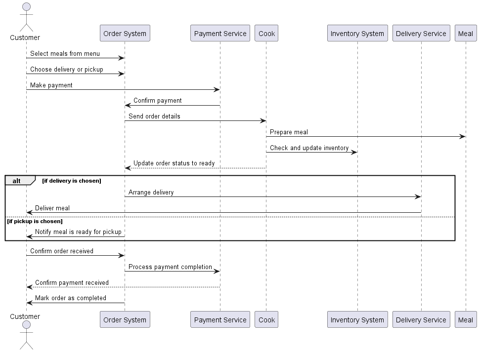
This sequence diagram assumes the following:
The customer interacts with the order system to place an order.
The customer then makes a payment through a payment service.
Upon payment confirmation, the order details are sent to the cook.
The cook prepares the meal and checks the inventory, updating it if necessary.
Once the meal is ready, the cook updates the order status in the system.
Depending on the customer's choice, the meal is either delivered by a delivery service or picked up by the customer.
The customer confirms receipt, which triggers the finalization of the payment process.
The order system marks the order as completed.
This diagram does not include the detailed internal processes of the payment service, the cook's internal processes, or the details of the delivery service, as they may not be necessary for understanding the high-level sequence of events. Additional details can be included based on further information from stakeholders or detailed system requirements.
Question 17
Read the diagram in Figure 4, i.e. describe what it designs. Reflect on it, its correctness, deficiencies (if any). When reflecting on it, use the questions of the previous task.
Figure 4:

Answer 17:
Description of the Diagram
The diagram describes the following interactions in the system:
A
Studentinitiates the process by checking the seat availability for a course.The
Courseobject responds with the seat availability.The
Studentproceeds to register for the course by providing anidandprereqs(prerequisites).The
Courseobject checks the prerequisites.Upon successful prerequisite checking, the
Courseobject updates the enrollment with the student'sid.The
Courseobject then initiates a payment process by sending theidandcourse numberto theAccountsystem.The
Studentis requested to make a payment, providingcourse numberandamount.The
Studentmakes the payment.The
Accountsystem updates the student record with theid,course number, andpayment amount.
Correctness and Completeness
Correctness:
The sequence of interactions appears to follow a logical order based on a typical course registration process.
The return messages indicate that each step is completed before moving to the next.
Potential Deficiencies:
The diagram does not specify the condition under which the seat availability check is successful or not, which would affect the subsequent actions.
There is no alternate flow defined for what happens if prerequisites are not met or if the payment process fails.
The
Accountsystem directly updates the student record after payment, but there is no explicit confirmation of payment success or failure back to theCourseorStudent.It is not clear from the diagram whether the
Studentis interacting with a UI component or if these are system-to-system interactions.
Reflection on Usefulness and Improvements
Reflecting on the sequence diagram, it captures the essential steps of the course registration process. However, it could be improved by:
Adding alternative paths to handle unsuccessful seat checks or prerequisite verifications.
Including error handling and exception flows, especially regarding payment failure.
Clarifying the role of the user interface in the registration process.
Ensuring that the final step of updating the student record is contingent upon successful payment, including a confirmation or receipt to the student.
The diagram can be enriched by adding more detailed interactions, time constraints for each step if it is a real-time system, and notes or comments for clarity. It is also essential to include any system constraints or business rules that might affect the sequence of actions.
In summary, while the sequence diagram provides a good overview of the registration process, it lacks detail in handling unsuccessful scenarios and explicit confirmation steps that are crucial for a robust system design.
Question 18
What types of frames can be used in sequence diagrams? What is their purpose? Name at least 3 types and show an example of each.
Answer 18:
In sequence diagrams, frames are used to denote different types of control structures that affect the flow of messages and interactions. They provide a way to handle more complex scenarios such as alternatives, loops, and conditional flows.
1. Alt Frame (Alternative)
An alt frame is used to represent alternative paths through the sequence. Each compartment in the alt frame represents a branch of the conditional flow.
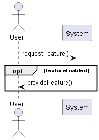
This sequence diagram uses an alt frame to depict two alternative interactions: one for a successful action and another for a failure.
2. Loop Frame
A loop frame indicates that a sequence of interactions is repeated a number of times, which could be dependent on a condition.
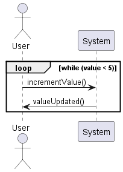
In this example, the loop frame is used to show that the User sends a message to the System to increment a value until a certain condition is met.
3. Opt Frame (Optional)
An opt frame represents an optional interaction that will only occur under a specific condition.
This diagram shows an optional interaction where the System provides a feature to the User only if the feature is enabled.
These frames help to structure the flow in sequence diagrams, making it possible to model complex logic and decision-making processes within interactions.
Question 19
Describe the process of designing an activity diagram. What constitutes the input for this diagram? Prepare a simple activity diagram and reflect on it. What are the main elements that make up an activity diagram? Where can I get additional detail complementing it? What are the options, if you want to specify the actor involved in actions/activities? Is it possible to include this in the activity diagram? What are other options? Mention at least several sources for this information. What elements can you use to enrich the activity diagram?
Answer 19:
Designing an activity diagram involves understanding the flow of activities or actions within a process or system. Here is the process for designing an activity diagram:
Define the Purpose: Understand what you want to model — a business process, a workflow, or a portion of a system.
Identify Inputs: Determine the inputs to the process. These could be user actions, system events, or conditions triggering the process.
Determine Activities: List all the activities that occur. This could be from documentation, user stories, or stakeholder interviews.
Organize the Flow: Arrange the activities in the sequence they occur, considering branching, parallel flows, and merge points.
Add Control Nodes: Include decision points, merges, forks, and joins to represent conditional or parallel paths.
Define Swimlanes: If necessary, use swimlanes to group activities by actor or role.
Review and Refine: Validate the flow with stakeholders, and refine as necessary to ensure accuracy and completeness.
Inputs for Activity Diagram
Use Case Descriptions: Narratives that describe the sequence of actions.
Business Rules: Governing rules that dictate the sequence and decision points.
Workflow Documentation: Existing documents that describe the process.
Stakeholder Interviews: Information gathered from users or stakeholders about the process.
Main Elements of an Activity Diagram
Activities: The actions that are part of the workflow.
Decisions: Points where the path splits based on a condition.
Merges: Points where paths converge.
Start and End Nodes: Symbols denoting the start and end of the process.
Forks and Joins: Represent parallel paths.
Swimlanes: Partition the diagram to show different responsibilities or actors.
Edges: Connect activities to show the flow.
Additional Details and Options
Data Objects: Can be used to show what data is required for or produced by activities.
Signals: Represent asynchronous communication between activities.
Annotations: Provide additional information or explanations.
To specify the actor involved in actions, swimlanes are often used, which can represent roles or organizational units. Another option is to use annotations or notes attached to activities to indicate the responsible actor.
Enriching the Activity Diagram
Partitions (Swimlanes): Clarify who does what.
Nested Activities: Show a high-level activity with a more detailed breakdown.
Time Events: Specify when events must occur.
Signals: Indicate the sending and receiving of asynchronous messages.
Exceptions: Handle unexpected flows or errors.
For additional details, sources could include:
Process Maps: Existing diagrams that can provide a high-level overview.
System Documentation: Detailed descriptions of the system's functionality.
Stakeholder Feedback: Input from those who participate in or manage the process.
Here is a simple example of an activity diagram:
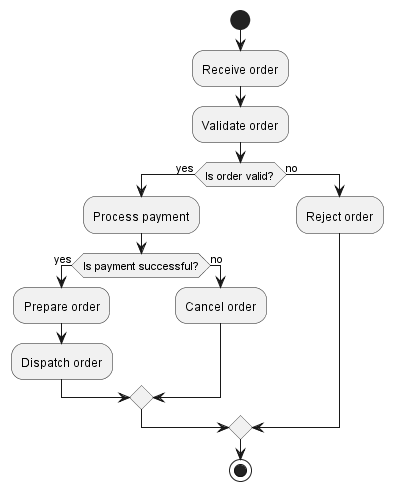
This example shows a simplified order processing workflow. The process begins with an order being received, then validated. If the order is valid, the payment is processed. If the payment is successful, the order is prepared and dispatched. If any step fails, the order is either canceled or rejected. Activity diagrams like this are great for visualizing the flow of a process and identifying where there might be potential issues or areas for improvement.
Question 20
Prepare an activity diagram for Figure 1. Keep it as close to the description as possible, but when the details are lacking, rely on your assumption.
Answer 20:
Figure 1:
The food ordering system allows the user to order meals from a menu. When an order is made, the customer/user can decide if it will be picked up from the cafe or if delivery is needed, as well as how it will be paid for. Once it is done, the order is processed by the cook, i.e. the meal is prepared. As part of this, the cook not only prepares the meal that was ordered, but also checks and marks in the system whether any component/product needs to be ordered for future orders (a kind of inventory is done). Once the meal is ready and the status of the order is changed accordingly, the order is packed and either waits for the customer or is given for delivery. Depending on the selected payment method, the order is paid either immediately upon placing the order, or when it is received. Once the order is received by the customer, the order is marked as completed.
An activity diagram for the food ordering system described in Figure 1.
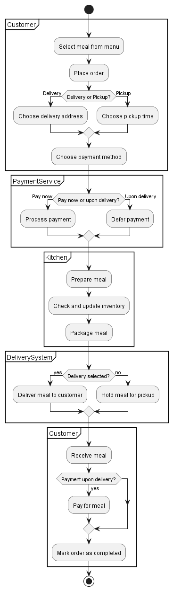
This activity diagram reflects the following assumptions and elements:
The Customer starts the process by selecting a meal and placing an order.
The Customer then decides whether they want delivery or pickup.
Based on the choice, the Customer will either choose a delivery address or a pickup time.
The Customer chooses a payment method and may pay immediately or upon delivery.
The Kitchen prepares the meal, checks and updates inventory, and packages the meal.
If delivery is chosen, the Delivery System delivers the meal; otherwise, the meal is held for pickup.
The Customer receives the meal and, if payment is deferred, pays for the meal upon delivery.
Finally, the Customer marks the order as completed.
The activity diagram uses partitions (also known as swimlanes) to denote responsibilities of different roles in the system: the Customer, PaymentService, Kitchen, DeliverySystem, and the Customer again for the final steps. This visualization helps in understanding the workflow and can be used for further analysis or improvement of the system.
Question 21
Describe the process of designing a statechart diagram. What are the key elements (and their types, if they are many) you should determine for your system and design with a statechart diagram? Which details might be missing? Where can I get additional details that complement it? Mention at least several sources for this information. What other elements can you use to enrich the statechart diagram? Prepare a statechart diagram and reflect on it.
Answer 21:
Designing a statechart diagram, also known as a state machine diagram, involves depicting the states an object or an interaction can be in, as well as the transitions between those states.
Process of Designing a Statechart Diagram
Identify the Object: Choose the object or system component for which you are modeling the states.
Define States: List all the possible states the object can be in during its lifecycle.
Determine Transitions: Identify the events that trigger a transition from one state to another.
Initial and Final States: Mark the beginning and end of the object's lifecycle.
Add Actions: For each transition, define the actions that result from it or that trigger it.
Specify Guards: Define the conditions that must be true for a transition to occur.
Nested States: If the object can be in a complex state, consider using nested states or substates.
Review and Refine: Validate the statechart with stakeholders and refine as needed for clarity and completeness.
Key Elements of a Statechart Diagram
States: Represent the condition of the object at a particular point in time.
Transitions: The movement from one state to another, usually triggered by events.
Events: Occurrences that trigger transitions, which can be external or internal.
Initial State: The starting point before any events have occurred.
Final State: The state signifying the end of the object's lifecycle.
Actions: Activities that are executed due to a transition.
Entry/Exit Actions: Actions that occur when entering or exiting a state.
Guard Conditions: Boolean expressions that must be true for a transition to fire.
Nested States/Composite States: States that contain other states to represent more complex behaviors.
Missing Details and Additional Sources of Information
Timing Constraints: Information about time conditions for states or transitions.
Concurrent States: The object might be in more than one state simultaneously, which should be documented.
Extended Business Rules: There might be business rules that affect state transitions, which are not immediately apparent.
Additional details can be gathered from:
Requirements Documentation: Detailed descriptions of the system's behavior.
Technical Specifications: Technical documents that describe the system components.
User Interviews: Insights from users about the expected behavior of the system.
System Logs: Actual recorded behavior of the system, which can reveal states and transitions not covered in the documentation.
Enriching the Statechart Diagram
History States: Allow the object to remember the last state it was in a particular region of the statechart.
Concurrent (Orthogonal) States: Show how an object can be in multiple states at the same time.
Entry/Exit Points: For composite states, to control the flow from and to nested states.
Here is an example:
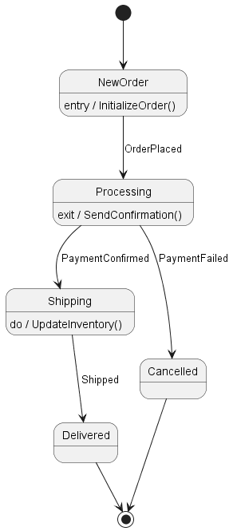
This statechart diagram represents the lifecycle of an order with states such as NewOrder, Processing, Shipping, Delivered, and Cancelled. Transitions are based on events like OrderPlaced, PaymentConfirmed, and PaymentFailed. Actions associated with entering or exiting states are included, such as initializing the order or sending a confirmation. This diagram helps in understanding how an order progresses through the system and could be used to identify areas where the process can be optimized or where additional functionality might be needed.
Question 22
How to simplify visual representation of your statechart, e.g., minimising the number of events/transitions? Provide an example.
Answer 22:
Simplifying the visual representation of a statechart involves reducing complexity while maintaining the essence of the object's behavior. Here are some strategies to simplify a statechart:
Combine Related States: If states represent variations of the same condition, they can often be combined into a single state with internal actions or choices.
Reduce Events: If multiple events trigger the same transition, consider if they can be abstracted into a single event.
Use Guard Conditions: Instead of having separate transitions for different conditions, use guard conditions to handle variations in a single transition.
Eliminate Redundant Transitions: If there are transitions that loop back to the same state without effect, they can usually be removed.
Abstract Common Patterns: If a pattern of behavior is repeated across different states, consider creating a superstate that encapsulates this behavior.
Focus on Key Transitions: Only include transitions that represent significant changes in state or are essential for understanding the system's behavior.
Let's consider an example of a simplified statechart for an online video player:
Complex Statechart (Before Simplification):
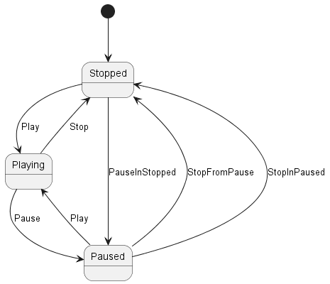
In the complex version, there are separate events for pausing and stopping from each state.
Simplified Statechart (After Simplification):
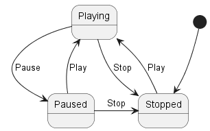
In the simplified version, the events PauseInStopped and StopFromPause are removed. Instead, the Paused state now covers the scenario where a pause can occur, leading to either Playing upon Play or Stopped upon Stop. The StopInPaused event is also removed as it's redundant and covered by the existing Stop event from the Paused state.
This simplification reduces the number of transitions and states without losing the functional understanding of the video player's behavior. It makes the diagram easier to read and understand by focusing on the core functionality.
Question 23
Whether statecharts allow to save history of the object behaviour in the past? If yes, how can this be done? If no, how can this be done otherwise? Provide an example.
Answer 23:
Yes, statecharts do allow saving the history of an object's behavior. This is typically done using a history state, which is a mechanism to remember the previous state of an object when it was last in a compound state. There are two types of history states:
Shallow History (H): This remembers the last active substate of a compound state but does not remember the history of nested substates.
Deep History (H*): This remembers the last active substate, including the history of nested substates.
When an object transitions back to a compound state with a history connector, it will enter the substate that was active when it last left the compound state.
Here's an example of how to represent a history state in a statechart:
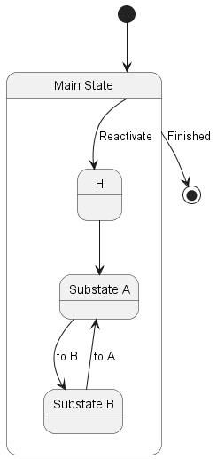
In this example, the "Main State" is a compound state with two substates: "Substate A" and "Substate B". The history state "H" remembers the last active substate. When the transition "Reactivate" is triggered, the object returns to the last remembered substate of "Main State". If "Substate A" was the last active state, then the transition to "H" would result in entering "Substate A".
This mechanism is useful for complex state machines where an object can have many states and substates, and the system needs to remember the state an object was in after a temporary transition to another state, such as a popup or interruption.
Question 24
Whether statecharts allow to capture different perspectives of object behaviour? If yes, how can this be done? If no, what are alternative options you can use? Provide an example.
Answer 24:
Statecharts do allow capturing different perspectives of an object's behavior, particularly through the use of orthogonal regions (also known as concurrent states or composite states). This feature enables a statechart to represent an object that can be in multiple states simultaneously, with each orthogonal region representing a different dimension or perspective of behavior.
Orthogonal Regions
Orthogonal regions in a statechart allow for the modeling of concurrent states within a single object. This means that an object can be in more than one state at the same time, with each state representing a different aspect of the object’s behavior.
Here's how orthogonal regions can be represented in a statechart diagram:
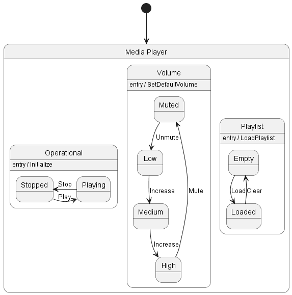
In this example, the "Media Player" object has three orthogonal regions representing different perspectives of its behavior:
Operational: Reflects whether the player is stopped or playing.
Volume: Manages the volume state, which can be muted, low, medium, or high.
Playlist: Indicates the state of the playlist, whether it is empty or loaded with tracks.
Each region operates independently, meaning the media player can be playing while also being muted and having a loaded playlist. This allows different aspects of the media player's behavior to be considered simultaneously.
Alternative Options
If orthogonal regions or statecharts are not available or suitable, other modeling techniques can be used:
Activity Diagrams: Show the flow of activities and can include concurrent paths of execution.
Interaction Overview Diagrams: Combine the overview of the interactions with the flow of control, allowing for concurrency.
Sequence Diagrams with Parallel Operators: Can show parallel sequences of interactions.
Statecharts with orthogonal regions are a powerful way to model complex systems where objects have multiple independent but concurrent states. These diagrams provide a clear and structured way to visualize and design the behavior of such systems.
Question 25
Read the diagram in Figure 5, i.e. describe what it designs. Reflect on it, its correctness, deficiencies (if any). When reflecting on it, use the questions of the previous task.
Figure 5:
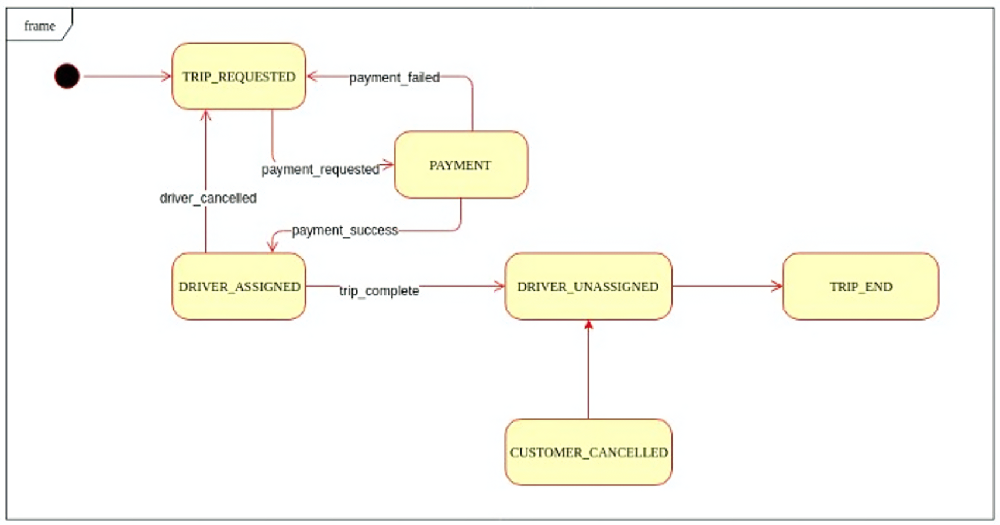
Answer 25:
The provided image is a statechart diagram for a ride-hailing or trip service. Let's describe its design and reflect on its correctness and any potential deficiencies.
Description of the Diagram
The statechart appears to model the states of a trip from the perspective of a ride-hailing application.
TRIP_REQUESTED: The initial state where a trip is requested by the customer.
PAYMENT: If the trip is requested, the process moves to the payment state.
If payment fails, it goes back to the TRIP_REQUESTED state.
If payment succeeds, it transitions to the DRIVER_ASSIGNED state.
DRIVER_ASSIGNED: This state indicates that a driver has been matched to the trip.
If the driver cancels, it returns to the TRIP_REQUESTED state.
If the trip is completed, it goes to the DRIVER_UNASSIGNED state.
DRIVER_UNASSIGNED: This state signifies that the driver is no longer assigned to the trip, leading to the trip's end.
TRIP_END: This is the final state, indicating the trip has been completed.
CUSTOMER_CANCELLED: If the customer cancels the trip, it transitions from DRIVER_ASSIGNED to DRIVER_UNASSIGNED.
Correctness
The states and transitions generally reflect a plausible flow for a trip in a ride-hailing service.
The diagram includes conditions for transitions, such as payment success or failure and trip completion.
Potential Deficiencies
The diagram lacks an explicit "initial" marker, which typically indicates the starting point in statechart diagrams.
There is no transition defined from the TRIP_REQUESTED state to the CUSTOMER_CANCELLED state. It is common for customers to be able to cancel a trip before payment or driver assignment.
The payment failure loop suggests that a user can immediately attempt payment again after a failure, which might not be the case in a real-world scenario due to potential lockout periods or required user actions before retrying.
There is no error handling or timeout mechanism shown for a trip that remains in the TRIP_REQUESTED state indefinitely.
The transition from CUSTOMER_CANCELLED back to DRIVER_UNASSIGNED seems to imply that a driver was assigned, which might not be the case if the customer cancels before a driver is assigned.
Reflection on Improvement
To improve the statechart:
An initial transition point could be added to clearly define the starting state.
Additional states or transitions could be included to handle timeouts or errors in the trip requesting process.
Customer cancellation should have transitions from more states, not just from DRIVER_ASSIGNED.
It could be useful to depict what happens if a trip is not accepted by any driver within a certain time (e.g., an "Expired" state).
Consider adding actions or activities that might occur within each state (e.g., sending notifications to the customer or driver).
The statechart diagram is a simplified representation, and while it captures the basic flow of a trip, it may need more detail to fully represent the complexities of a real-world ride-hailing service. Additional input from system requirements, user feedback, and operational data would be valuable to further refine the diagram.
Question 26
Prepare a statechart diagram for Figure 1. Keep it as close to the description as possible, but when the details are lacking, rely on your assumption.
Figure 1:
The food ordering system allows the user to order meals from a menu. When an order is made, the customer/user can decide if it will be picked up from the cafe or if delivery is needed, as well as how it will be paid for. Once it is done, the order is processed by the cook, i.e. the meal is prepared. As part of this, the cook not only prepares the meal that was ordered, but also checks and marks in the system whether any component/product needs to be ordered for future orders (a kind of inventory is done). Once the meal is ready and the status of the order is changed accordingly, the order is packed and either waits for the customer or is given for delivery. Depending on the selected payment method, the order is paid either immediately upon placing the order, or when it is received. Once the order is received by the customer, the order is marked as completed.
Answer 26:
Below is a statechart for the food ordering system as described in Figure 1. This diagram will illustrate the lifecycle of an order from placement to completion, including decision points for payment and delivery.
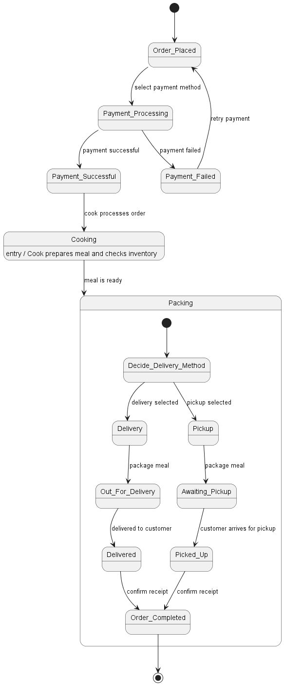
In this statechart:
The order starts at the
Order_Placedstate.The customer then decides how to pay, moving the order to
Payment_Processing.If payment is successful, the order goes to
Cooking; if payment fails, it returns toOrder_Placed.Once the meal is prepared, the order transitions to
Packing, where the delivery method is decided.Depending on whether delivery or pickup is selected, the order goes to either
Out_For_DeliveryorAwaiting_Pickup.Finally, once the meal is received by the customer, the order is marked as
Order_Completed.
This statechart assumes that an order can cycle back to payment if the initial attempt fails and that after the meal is prepared, it will be either delivered or picked up, resulting in the order's completion. Additional details like time constraints for meal preparation or handling order cancellations can be added as needed for a more comprehensive diagram.
Question 27
What is business process modelling (guest lecture) special about, when compared to {class model, use-cases, sequence diagram, activity diagram, statechart}? Can one of the above be used for the same purpose as BPM? What are the key elements used for the BPM?
Answer 27:
Business Process Modeling (BPM) is a way of representing the processes of an enterprise in order to analyze and improve them. It differs from other UML diagrams in several key ways:
Comparison with UML Diagrams
Class Model: A class model describes the static structure of objects in a system and their relationships. It doesn't capture the dynamic processes or workflows that BPM focuses on.
Use-Cases: Use-case diagrams model the interactions between users (actors) and the system to achieve a goal. While they capture high-level processes, they don't provide the detailed flow of tasks and decisions that BPM does.
Sequence Diagram: Sequence diagrams show the order of interactions between system components over time. They are more granular and focused on the flow of messages rather than the broader business processes that BPM encompasses.
Activity Diagram: Activity diagrams are the closest to BPM and can sometimes be used interchangeably. However, BPM tends to focus more on cross-departmental and higher-level business processes, while activity diagrams often model the workflow of a particular use case or function within a system.
Statechart: Statechart diagrams model the states and transitions in the lifecycle of an entity. They are useful for understanding how an entity responds to internal and external events, which is a different focus from the end-to-end business processes captured in BPM.
Key Elements Used for BPM
Activities/Tasks: The fundamental actions that are part of the business process.
Events: Triggers that initiate, interrupt, or end processes.
Gateways/Decision Points: Branching points where the process may follow different paths based on conditions or decisions.
Sequence Flow: The order in which tasks and decisions are performed.
Swimlanes/Roles: Represent organizational units or roles and who is responsible for which part of the process.
Artifacts: Additional information such as data objects, annotations, or other elements that are part of the process but not actions themselves.
Connectors: Used to connect the flow between different processes or sub-processes.
Using UML Diagrams for BPM Purposes
While class models, use-cases, sequence diagrams, and statecharts generally serve different purposes from BPM, activity diagrams can sometimes be used for BPM purposes, especially when the focus is on the flow of activities and decisions within a process.
BPM tools often offer more than just process representation — they may include simulation, execution, and monitoring capabilities, which are not the focus of standard UML diagrams. BPM aims to provide a comprehensive view of the organizational processes, which can be used for analysis, optimization, and automation, providing a broader business perspective than is typically achieved with UML diagrams.
Question 28
What are pros and cons of code generation tools? Reflect on your experience gained as a part of this course (or outside of it). Would you use it in the future? Why?
Answer 28:
Code generation tools are designed to automate the creation of source code based on models, templates, or predefined patterns. They can be powerful assets in software development, but like any tool, they come with their own set of advantages and disadvantages.
Pros of Code Generation Tools
Increased Productivity: Automating the creation of boilerplate code saves time and allows developers to focus on more complex tasks.
Consistency: They enforce a consistent coding style and architecture, reducing the chances of human error and variance in code quality.
Speed: They can rapidly generate large amounts of code, which speeds up the initial phases of development.
Documentation: The model or specifications from which the code is generated can serve as a form of documentation for the system.
Integration: Code generators can integrate with other tools and workflows, making them a versatile part of the software development ecosystem.
Cons of Code Generation Tools
Learning Curve: They require time to learn and understand, and this can be a barrier for new team members.
Complexity: Over-reliance on code generators can lead to complex generated code that is difficult to understand and maintain.
Flexibility: Generated code may not always meet specific requirements and can be hard to customize without breaking the generation process.
Overhead: Maintaining the models or templates that the tool uses can become an overhead if not managed properly.
Dependency: There's a risk of becoming too dependent on a tool, which can be problematic if the tool is discontinued or if the team needs to transition away from it.
Personal Reflection
Reflecting on the use of code generation tools in various contexts, they are invaluable for rapid development, especially in the early stages of a project or when dealing with standard patterns and practices. They can significantly reduce the time to market for certain features and ensure adherence to best practices through consistent code patterns.
However, there is a trade-off in terms of maintainability and understanding of the codebase. Generated code can be verbose and may include unnecessary complexity. When changes are needed, it's often more difficult to make them in the generated code than it would be in hand-written code. It's also important for developers to understand the underlying principles and not become entirely reliant on tools for coding.
In future projects, I would use code generation tools for:
Initial scaffolding of projects and setup.
Generating repetitive and boilerplate code, particularly for CRUD operations and API clients.
Prototyping, to quickly demonstrate concepts without investing time in writing detailed implementations.
I would be cautious about using code generation for complex business logic or areas of the codebase that require frequent and bespoke modifications. The key is to strike a balance between the benefits of rapid generation and the need for maintainability and control over the codebase.